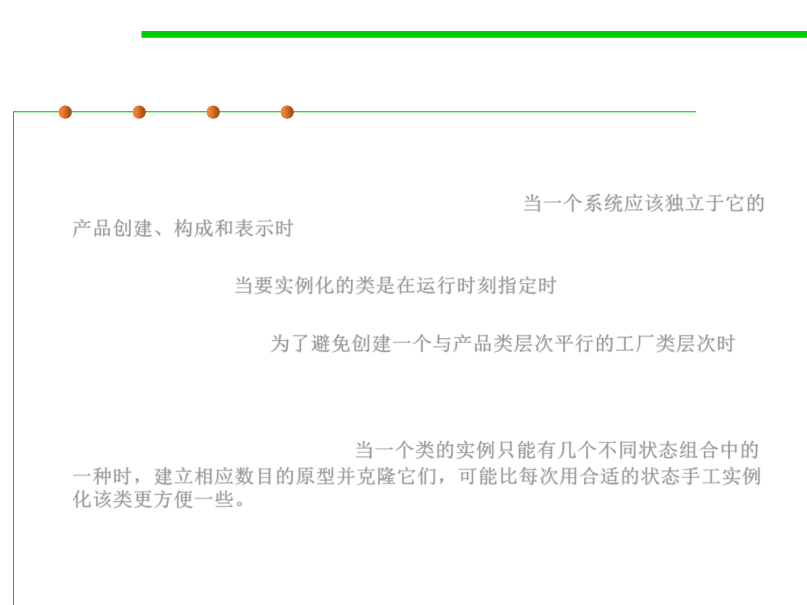

Prototype pattern
8.3 Code Tuning for Performance Optimization
▪ Applicability
– Use the Prototype pattern when a system should be independent of how its
products are created, composed, and represented; 当一个系统应该独立于它的
产品创建、构成和表示时
– when the classes to instantiate are specified at run-time, for example, by
dynamic loading; 当要实例化的类是在运行时刻指定时
– to avoid building a class hierarchy of factories that parallels the class
hierarchy of products;为了避免创建一个与产品类层次平行的工厂类层次时
– when instances of a class can have one of only a few different combinations of
state. It may be more convenient to install a corresponding number of
prototypes and clone them rather than instantiating the class manually, each
time with the appropriate state.当一个类的实例只能有几个不同状态组合中的
一种时，建立相应数目的原型并克隆它们，可能比每次用合适的状态手工实例
化该类更方便一些。